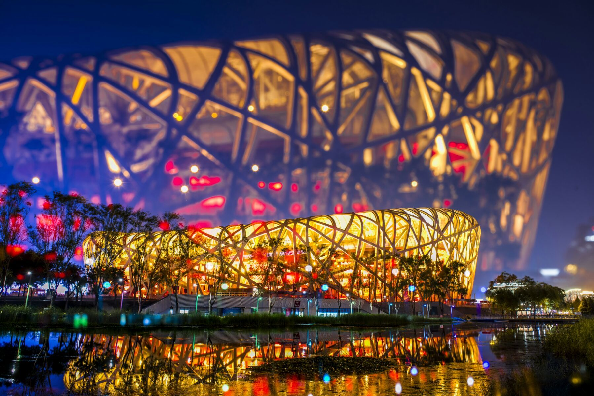

-
"鳥巢體育場:北京奧運遺產與自然景觀的完美融合!"
這張圖片展示了位於北京的鳥巢體育場,這是一座令人印象深刻的建築結構,由赫尔佐格和德缪龙設計,並於2008年北京夏季奧運會期間建成。體育場倒映在附近池塘平靜的水面上,呈現出一幅優美的景象。
(2021年2月28日,攝影師在北京鳥巢體育場拍攝了這幅優美的景致)
-

這張圖片拍攝於北京鳥巢體育場內部,展現了這座標誌性的建築物,其波浪形的屋頂結構與寬闊的座位區域。從圖中可以看到,體育場內部在一場體育賽事或競技活動期間,座位一片鮮紅與白色,比賽場地也在下方可見。具體拍攝日期未提供。
[攝影師捕捉了北京鳥巢體育場內部迷人的建築景象@2018年7月24日]
-

~北京鳥巢夜景:光影交織,建築與自然完美融合~
這張圖片捕捉了北京鳥巢體育場在夜間的迷人景象。體育場外部結構被五彩燈光照亮,映射在湖面上形成動感的光影效果。拍攝時間為不明確,但應該是在夜晚時分拍攝的。
(攝影師捕捉到了北京鳥巢體育場璀璨夜景的動人景致)